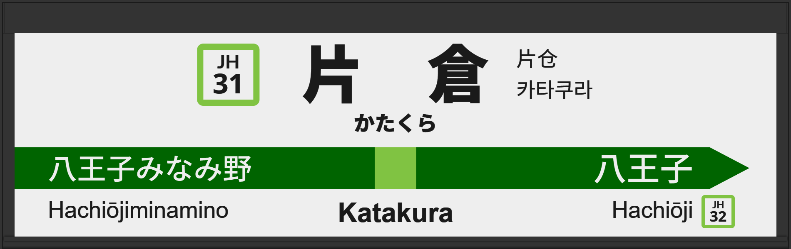

| ←八王子みなみ野 | ■ 横浜線 | 八王子→ |
|---|
2005年1月に常磐初期型ATOS放送を導入、しかし1日で東海道型放送に戻る。
2015年7月に宇都宮型ATOS放送を導入する。
2026年3月にワンマン化により、発車メロディの扱いが停止される。
| 1 | ■ 横浜線 八王子方面 |
1番線次発予告 1番線接近放送 1番線到着放送 1番線発車メロディ（JR-SH2-3） |
放送は「各駅停車 八王子行」です。 向山佳衣子氏です。 発車メロディは使用終了しております。 |
|---|---|---|---|
| 2 | ■ 横浜線 東神奈川方面 |
2番線次発予告 2番線接近放送 1番線到着放送 2番線発車メロディ（JR-SH2-3） |
放送は「各駅停車 東神奈川行」です。 発車メロディは使用終了しております。 |
| 1 | ■ 横浜線 八王子方面 |
1番線次発予告 1番線接近放送 1番線発車メロディ（JR-SH2-3） |
放送は「各駅停車 八王子行」です。 常磐初期型後期です。 向山佳衣子氏です。 |
|---|---|---|---|
| 2 | ■ 横浜線 東神奈川方面 |
2番線次発予告(各駅停車 磯子行) 2番線次発予告(各駅停車 茅ヶ崎行) 2番線次発予告(快速 逗子行) 2番線接近放送(各駅停車 磯子行) 2番線接近放送(各駅停車 茅ヶ崎行) 2番線接近放送(各駅停車 大船行) 2番線接近放送(快速 桜木町行) 2番線接近放送(快速 逗子行) 2番線発車メロディ（JR-SH2-3） |
津田英治氏です。 常磐初期型後期です。 快速逗子行きはこの中で最もレアだと思われます。 |